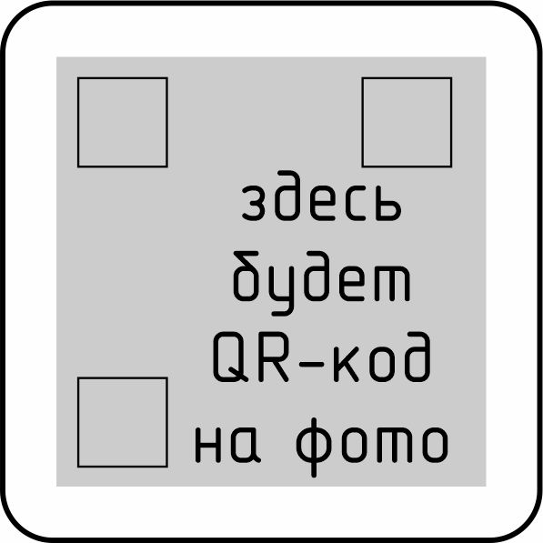

5.3.12 Монтаж электроточек. Подключение светильников, вентиляторов. Укладка теплого пола "Зебра".
-
5.3.12.1. Монтаж светильников.
Необходимая документация для выполнения работ: Разделы АР, ИР.Электрика.
Производимые операции:
- Убедиться, что выведенные провода под светильники утапливаются внутри панели кровли вместе с соединительными гильзами. Данная система предусматривает возможность в процессе эксплуатации дома произвести замену гильз и переподключение жил проводов. Зачистить концы жил кабелей.
- У светильника снять с проводов подключения клеммную винтовую колодку. Подключить светильник к питающей линии с помощью зажимных клеммников WAGO 222-412 (или 221-412).
- Уложить клеммники внутри монтажной площадки светильника. Произвести монтаж светильника с помощью саморезов соответствующей длины. В зависимости от типа светильника высота монтажной площадки может отличаться. Саморезы подбирать такой длины, чтобы они не проходили ТСП насквозь, иначе их острые концы могут повредить изоляцию кабеля внутри РК. Установить корпус светильника и установить лампочку. Убедиться, что цветовая температура лампочки соответствует 3000К.
Контрольные параметры:
- Совпадение светильников с проектным положением.
- Светильник плотно прилегает к ТСП, зазоры между корпусом светильника и ТСП отсутствуют.
- Цветовая температура лампочки светильника 3000К.
- Лампочка установлена в светильник.
По факту контрольных замеров ставится отметка в паспорте ОТК.
Необходимый инструмент и оборудование:
- Аккумуляторный шуруповерт с зажимым патроном.
- Бита PZ2.
- Специнструмент электрика.
- Рулетка 5м.
Расходные материалы:
- Саморезы СЧ 3,5х25.
- Клеммы WAGO 221-412.
5.3.12.1. Монтаж светильников. Ссылка на фотографии производства работ:

-
5.3.12.2. Монтаж выключателей.
Необходимая документация для выполнения работ: Разделы АР, ИР.Электрика.
Производимые операции:
- Электроточки расположить согласно листов ЭОМ и развертки стен на листах АР.
- Убедиться, что жилы проводов для подключения умещаются в РК внутри панели стены.
Тип расключения выключателей указан на листе ЭОМ. Схемы расключения по номерам посмотреть ЗДЕСЬ.
Если подключается гибкий многожильный кабель, то на его жилы обязательно насадить гильзовые обжимные наконечники.
При подключении учитывать, что положение клавишы во включеном состоянии: клавиша утоплена сверху. - Корпус подключенного выключателя закрепить к подрозетнику саморезами. Установить декоративную рамку. Рамка должна прилегать с равномерным зазором.
Контрольные параметры:
- Провода подключены к клеммам выключателей/переключателей.
- Расположение выключателей/переключателей соответствует листам ЭОМ и АР.
- Зазор между декоративной рамкой и ТСП равномерный, не более 2мм.
- Положение клавиши ВКЛ - сверху.
По факту контрольных замеров ставится отметка в паспорте ОТК.
Необходимый инструмент и оборудование:
- Специнструмент электрика.
- Динамометрическая отвертка.
- Аккумуляторный шуруповерт с зажимным патроном.
- Бита PZ2.
- Рулетка 5м.
Расходные материалы:
- Наконечник гильзовый НШВИ, соответствующего диаметра.
5.3.12.2. Монтаж выключателей. Ссылка на фотографии производства работ:
-
5.3.12.3. Монтаж розеток.
Необходимая документация для выполнения работ: Разделы АР, ИР.Электрика.
Производимые операции:
- Розетки расположить согласно листов ЭОМ и развертки стен на листах АР.
- Убедиться, что жилы проводов для подключения умещаются в РК внутри панели стены.
Если подключается гибкий многожильный кабель, то на его жилы обязательно насадить гильзовые обжимные наконечники. - Корпус подключенной розетки закрепить к подрозетнику саморезами. Установить декоративную рамку. Рамка должна прилегать с равномерным зазором.
Контрольные параметры:
- Провода подключены к клеммам.
- Расположение розеток соответствует листам ЭОМ и АР.
- Зазор между декоративной рамкой и ТСП равномерный, не более 2мм.
По факту контрольных замеров ставится отметка в паспорте ОТК.
Необходимый инструмент и оборудование:
- Специнструмент электрика.
- Динамометрическая отвертка.
- Аккумуляторный шуруповерт с зажимным патроном.
- Бита PZ2.
- Рулетка 5м.
Расходные материалы:
- Наконечник гильзовый НШВИ, соответствующего диаметра.
5.3.12.3. Монтаж розеток. Ссылка на фотографии производства работ:
-
5.3.12.4. Монтаж электровентиляторов и приточных установок.
Необходимая документация для выполнения работ: Разделы АР, ИР.Электрика.
Производимые операции:
- Вентиляторы вытяжки расположить согласно листов ЭОМ и развертки стен на листах АР.
Приточные устройства устанавливаются опционно, поэтому их положение указывается на планировке дома. - Убедиться, что жилы проводов для подключения умещаются в РК внутри панели стены.
Если подключается гибкий многожильный кабель, то на его жилы обязательно насадить гильзовые обжимные наконечники. - Вентилятор установить с правильным пложением обратного клапана.
- Подключить питание к заводским клеммам вентилятора.
- Установить вентилятор в вентканал. Вентилятор должен прилегать к ТСП равномерно с зазором не более 2мм.
- Установить приточное устройство согласно руководства для Ballu ASP-100.
Контрольные параметры:
- Провода подключены к клеммам.
- Расположение соответствует листам ЭОМ и АР.
- Зазор между корпусом вентилятора и ТСП равномерный, не более 2мм.
По факту контрольных замеров ставится отметка в паспорте ОТК.
Необходимый инструмент и оборудование:
- Специнструмент электрика.
- Динамометрическая отвертка.
- Аккумуляторный шуруповерт с зажимным патроном.
- Бита PZ2.
- Рулетка 5м.
Расходные материалы:
- Наконечник гильзовый НШВИ, соответствующего диаметра.
5.3.12.4. Монтаж электровентиляторов и приточных установок. Ссылка на фотографии производства работ:
- Вентиляторы вытяжки расположить согласно листов ЭОМ и развертки стен на листах АР.
-
5.3.12.5. Подготовка модуля к укладке теплого пола "Зебра".
Необходимая документация для выполнения работ: ИР.Электрика.
Производимые операции:
- Убедиться, что листовой материал чернового пола закреплен на саморезы. Гвозди не допустимы! Поверхность пола не имеет выступающих шляпок саморезов, очищена от мусора, песка, пыли.
- Разметить трассу питающих кабелей и термодатчика греющего пола.
- Отфрезеровать паз под трассу питающих кабелей и термодатчик. Размеры паза указаны на листе раскладки теплого пола в разделе ЭОМ. Фрезеровка паза выполняется на производстве в каждом модуле, даже если маты теплого пола будут укладываться на монтаже. На монтаж отправляется подготовленный к укладке теплого пола модуль. После фрезеровки обработать шкуркой - притупить острые края паза.
- Отфрезеровать паз под трассу питающих кабелей и термодатчик. Размеры паза указаны на листе раскладки теплого пола в разделе ЭОМ.
Контрольные параметры:
- Ровная поверхность пола.
- Нет острых стыков фанеры.
- Нет выступающих шляпок саморезов.
- Подготовлен паз под трассу питающих кабелей и термодатчик.
- Нет острых краев паза под трассу питающих кабелей и термодатчик.
По факту контрольных замеров ставится отметка в паспорте ОТК.
Необходимый инструмент и оборудование:
- Пылесос.
- Ручной фрезер.
- Фреза торцевая диаметром 12мм.
- Рулетка 5м.
Расходные материалы:
- Шкурка/наждачная бумага Р120.
5.3.12.5. Подготовка модуля к укладке теплого пола "Зебра". Ссылка на фотографии производства работ:
-
5.3.12.6. Укладка матов теплого пола "Зебра".
Необходимая документация для выполнения работ: ИР.Электрика.
Данный этап выполняется только в том модуле, в котором напольное покрытие укладывается на производстве.
Производимые операции:
- Разложить нагревательные маты согласно схемы укладки для данного модуля. Минимальное расстояние между рядами матов должно быть 30мм. Данный зазор необходим для укладки проводов, соединяющих секции.
- Питающие провода прокладывать внутри фрезерованного паза только в 1 слой. Пересечение проводов внутри паза не допускается. Исключать дополнительные соединения в проводах. Провода должны идти цельные от терморегулятора до конца трассы. Провода трассы фиксировать в пазе с помощью скотча, не допускается выступание проводов за пределы паза.
- Не подключенные провода на противоположных концах блока из греющих секций необходимо заизолировать с помощью термоусадки. Провода, соединяющие греющие секции между собой фиксировать к панели пола скотчем таким образом, чтобы они не попадали на люверсы. Иначе провода повредятся, что может привести к риску возгорания. На каждой секции имеются установленные на заводе люверсы. Укладка проводов под или над этими люверсами не допускается. Секции и провода фиксировать к панели пола с помощью скотча. Для дополнительной фиксации допускается закрепить скотч скобами А-06.
- Все соединения греющих секций с питающими проводами должны находиться внутри фрезерованного паза. На все соединения устанавливать термоусадку. Провода греющих секций с питающим кабелем соединять по инструкции к теплому полу. Соединение проводов производить пайкой при помощи паяльной пасты и зажигалки. Место соединения обязательно изолировать при помощи термоусадки.
- В заводском блоке нагревательных матов секции заземлены друг с другом. Если секция отрезается от блока, то заземление между ними разрывается. Присоединять заземляющий проводник требуется только к крайней секции не разрезанного блока нагревательных матов. Для заземления греющих секций необходимо установить отдельный люверс и закрепить к нему заземляющий проводник. Люверсы крепить по краю листа секции, избегая попадания в нихромовую нагревательную нить. Крепить заземляющий проводник к существующим люверсам не допускается, т.к. это приводит к увеличению толщины секции в месте крепления заземления.
- Выполнить подключение к клеммам терморегулятора. Работы проводить согласно инструкции применяемого терморегулятора. В каждую клемму терморегулятора заводить только по одному проводу. Гибкие многожильные провода необходимо либо пропаять, либо установить на них гильзовый наконечник.
- Провести тестовое испытание роботоспособности греющх теплого пола путем подключения терморегулятора через дифавтомвт с током утечки 30мА. Контрольное время работы теплого пола 3 часа. Наличие подключенного заземляющего проводника ОБЯЗАТЕЛЬНО!
Контрольные параметры:
- Нет проводов, выступающих более 1,5мм выше поверхности пола.
- Провода питающей линии в пазе проложены компактно, без выступов за пределы паза и зафиксированы скотчем.
- Провода, соединяющие секции матов между собой, зафиксированы к полу скотчем.
- Концевые провода матов заизолированы термоусадеой.
- На всех ответвлениях жил от основной трассы установлена термоусадка.
- Терморегулятор подключен.
- Теплый пол с подключенным зазаемлением проработал без перебоев и срабатывания дифавтомата в течение 3-х часаов.
По факту контрольных замеров ставится отметка в паспорте ОТК. Перед следующим этапом необходимо произвести замер сопротивления всех подключенных матов со стороны термореле и сопротивление термодатчика. Данные записать в паспорт ОТК. Произвести фотофиксацию показаний омметра и сохранить фото в папке с фототчетом по данному объекту.
Сделать фотофиксацию подключенного теплого пола. Общий вид и укрупненные фото каждой точки подключения. Сделать фото показаний тепловизора с видом работающих секций.
Необходимый инструмент и оборудование:
- Инструмент электрика.
- Пневмостеплер.
- Нож.
- Минигорелка или турбозажигалка.
- Рулетка 5м.
- Тепловизор.
Расходные материалы:
- Скотч (серый), канцелярский.
- Паста паяльная.
- Скоба А-06.
- Термоусаживаемая трубка клеевая 6/2.
5.3.12.6. Укладка матов теплого пола "Зебра". Ссылка на фотографии производства работ:
-
5.3.12.7. Подготовка матов теплого пола "Зебра" к укладке напольного покрытия.
Необходимая документация для выполнения работ: ИР.Электрика.
Данный этап выполняется только в том модуле, в котором напольное покрытие укладывается на производстве.
Производимые операции:
- Очистить поверхность пола от мусора, пыли.
- Поверх матов теплого пола уложить подложку в 1 слой, без нахлестов. Крепить листы/полосы подложки между собой скотчем.
- Под провода, отходящие от секций, а также под провода, соединяющие секций между собой, и провода, идущие к пазу с питающим кабелем, сделать вырезы в подложке.
- Поверх теплого пола необходимо уложить полиэтилен высокого давления ПВД плотностью 150-300 мкм. Укладывать полиэтилен в один слой, фиксировать с помощью скотча.
Контрольные параметры:
- Подложка уложена без нахлестов.
- В подложке сделаны вырезы над проводами греющих секций и ответвлений к основной питающей линии.
- Поверх подложки уложен полиэтилен по всей поверхности пола модуля.
По факту контрольных замеров ставится отметка в паспорте ОТК.
Необходимый инструмент и оборудование:
- Пылесос.
- Нож.
- Рулетка 5м.
Расходные материалы:
- Скотч (серый), канцелярский.
5.3.12.7. Подготовка матов теплого пола "Зебра" к укладке напольного покрытия. Ссылка на фотографии производства работ: